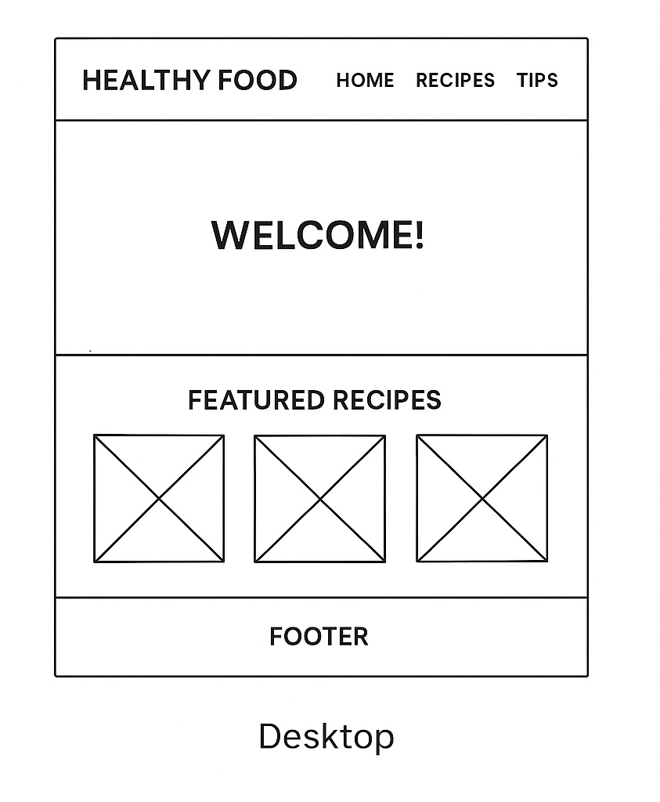

Site Name
Healthy Food That Is Still Tasty
This name reflects the purpose of the website: to provide recipes and tips that make healthy eating enjoyable and flavorful.
Site Purpose
The website will provide information on how to prepare nutritious meals without compromising on taste. It will include healthy recipes, nutrition tips, and meal planning ideas to help visitors eat better while still enjoying their food.
Scenarios
- “What are some quick, healthy recipes I can make after work?”
- “How can I substitute common ingredients to make my meals healthier?”
- “What are the benefits of following a balanced diet?”
Color Schema
I will use a fresh, food-inspired color palette:
- Green (#4CAF50) – for headers, navigation highlights, and accents (represents freshness and health).
- Orange (#FF9800) – for call-to-action buttons, highlights, and accents (represents energy and flavor).
- Light Beige (#FAF3E0) – background color for a clean and natural look.
Typography
- Poppins (Sans-serif) – for headings, modern and clean.
- Open Sans (Sans-serif) – for body text, easy to read.
Wireframe
Home Page Wireframe:
Mobile View
Desktop View
(Wireframes show header with logo/nav, hero section with welcome text, featured recipes grid, and footer with links.)